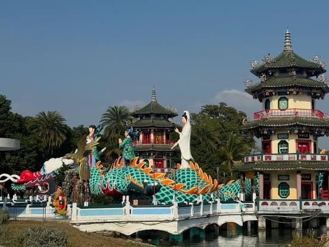

The Spring and Autumn Pavilions (ㄔㄨㄣ ㄑㄧㄡ ㄍㄜˊ chunqiuge)are a prominent Taoist temple complex located on the scenic Lotus Pond in the Zuoying District of Kaohsiung, Taiwan. Completed in 1953 by the nearby Chi Ming Palace, this landmark consists of two four-story, octagonal palace-style towers—the "Spring Pavilion" and the "Autumn Pavilion"—which symbolize the eternal balance of yin and yang